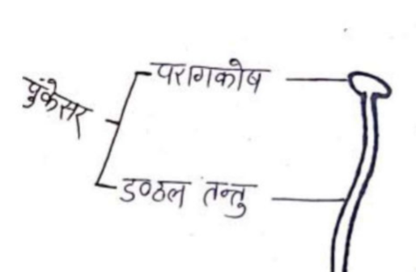
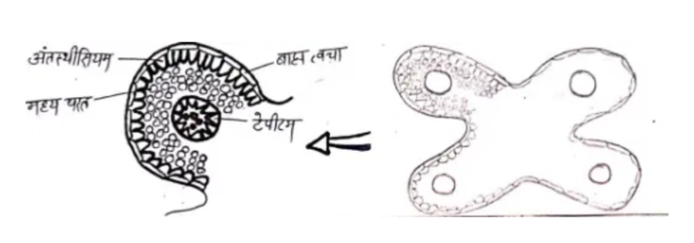
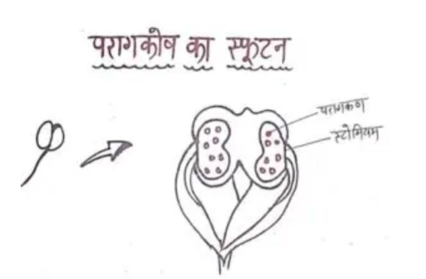
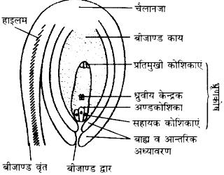
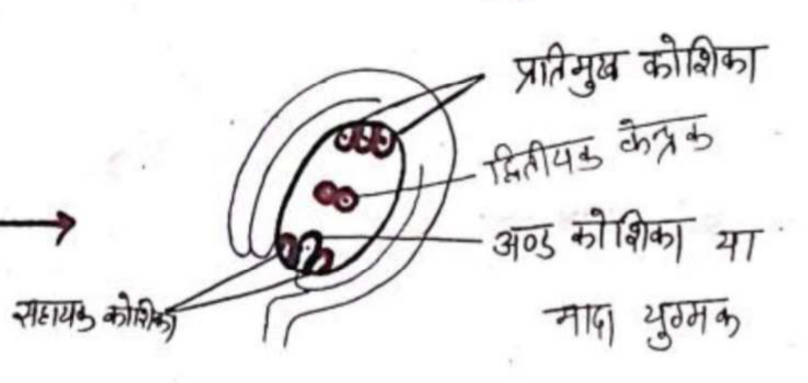
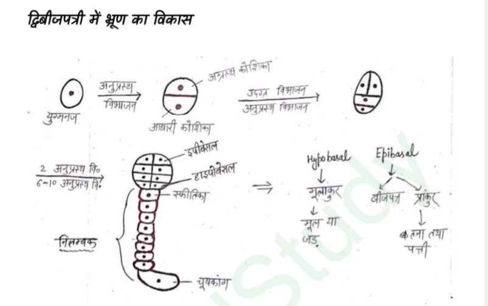

A typical flower has four main whorls –
- Calyx – this is the outermost whorl of the flower, green in colour, and protects the flower while it is in the bud stage.
- Corolla – coloured and attractive, helps in pollination.
- Androecium (stamens) – the male reproductive organ, made up of the anther and filament.
- Gynoecium (pistil/carpel) – the female reproductive organ, made up of the ovary, stigma and style.

- Pollen grains are formed in the stamens, and the egg cell (ovum) is formed in the ovary.
- During pollination, pollen grains reach the stigma.
- A pollen tube develops from the pollen grain, which reaches the ovule.
- One male gamete fuses with the egg cell to bring about fertilisation.
- The second male gamete fuses with the central cell to form the endosperm.
- In this way, sexual reproduction takes place in angiosperms through double fertilisation.
Answer - Flowers in which either only stamens or only pistils are present are called unisexual flowers.
Answer - Flowers that have both stamens and pistils are called bisexual flowers.
Answer -
- Male reproductive organ - Stamen (Androecium)
- Female reproductive organ - Pistil (Gynoecium)
Male gametophyte - In angiosperms, the pollen grain is called the male gametophyte.
It produces two male gametes.
Female gametophyte - In angiosperms, the embryo sac is called the female gametophyte.
It produces one female gamete (egg cell).
The male gametophyte (pollen grain) develops inside the anther of the stamen.
The female gametophyte (embryo sac) develops inside the ovule located in the ovary.
The androecium is the male reproductive organ of the flower.
It has two main parts.
- Filament – a thin stalk that supports the anther.
- Anther – located at the top of the filament, a bilobed structure in which pollen grains are formed.

The part of the male flower that produces pollen grains is called the anther.
Example — anthers are found in the flowers of wheat, pea, cotton, etc.
Structure

The anther is a bilobed structure; each lobe contains two pollen sacs, i.e. a total of four pollen sacs (microsporangia) are found.
- Epidermis
- Endothecium
- Middle layers
- Tapetum (innermost layer)

The tapetum is the innermost layer of the anther wall. These cells are dense, multinucleate, and rich in nutrients.
Role:
- Provides nourishment to the pollen grains.
- Supplies the enzymes and materials needed for the construction of the pollen wall.
- Synthesises sporopollenin, which strengthens the outer layer.
Microsporogenesis is the process by which the microspore mother cells present inside the anther form microspores through meiosis.
Process -
- Microspore mother cells are found inside the anther.
- Each mother cell undergoes meiosis.
- This produces four microspores, called a tetrad.
Dehiscence of the anther is the process in which the anther bursts open on reaching maturity, and the pollen grains formed inside it are released.

The functional microspore is the primary cell of the pollen grain (male gametophyte).
The pollen grain is a haploid cell, and it has two wall layers.
- Exine (outer wall) - the exine is made up of a highly resistant fatty substance called sporopollenin. Sporopollenin is unaffected by any temperature, acid, alkali, etc. This is the reason pollen grains do not undergo biological decomposition.
- Intine (inner wall) - the intine is made up of pectocellulose. It is the intine from which the pollen tube is formed.

The gynoecium (pistil) is the female reproductive organ of the flower.
The pistil has three main parts—
- Stigma - this is the uppermost part of the pistil. It is sticky and receives the pollen grains.
- Style - this is a thin, tube-like structure. It connects the stigma to the ovary.
- Ovary - this is the lower, swollen part of the pistil. It contains the ovules.
This is a seed-shaped structure located inside the ovary of the flower, inside which megaspores are formed.
Ovule -

Each ovule is attached to the ovary by a thin structure called the funicle.
The ovule is surrounded by one or two coverings; the outer covering is called the outer integument and the inner covering is called the inner integument.
The integument is incomplete at one point on the ovule, forming an opening called the micropyle.
The part of the ovule from which the integument arises is called the chalaza, which is always located on the side opposite the micropyle.
Inside the ovule there is a mass of soft (parenchymatous) tissue called the nucellus.
In the middle of the nucellus there is a sac-like structure called the embryo sac.
Megasporogenesis is the process in which the megaspore mother cells present inside the ovary form megaspores through meiosis.
Process -
One of the hypodermal (parenchymatous) cells present in the nucellus enlarges in size; its cytoplasm becomes dense and its nucleus becomes larger. This is called the archesporial cell.
The archesporial cell undergoes mitosis, forming a primary parietal cell towards the outside and a sporogenous cell towards the inside.
The sporogenous cell, without dividing, starts functioning as the megaspore mother cell.
The megaspore mother cell undergoes meiosis, forming four haploid megaspores. Of these, three haploid megaspores degenerate soon after.
One megaspore remains functional; only the functional megaspore develops further into the embryo sac (female gametophyte).

The functional megaspore is the primary cell of the female gametophyte.
The megaspore grows and comes to occupy most of the ovule.
Its nucleus divides mitotically into two nuclei, and both nuclei move to the two poles.
These nuclei again undergo mitosis, and two become four nuclei. All four nuclei again undergo mitosis, forming eight nuclei.
Of these, 4 nuclei are located towards the chalaza and 4 nuclei towards the micropyle.
One nucleus from the chalazal side and one nucleus from the micropylar side move to the centre and come to lie there; these are called the polar nuclei.
The 3 nuclei located towards the chalaza, after cytoplasm is partitioned around them, are called the antipodal cells.
The 3 nuclei located towards the micropyle, after cytoplasm is partitioned around them - the middle cell is called the egg cell (female gamete), and the two cells on either side are called the synergid cells.
The polar nuclei fuse together and are called the secondary nucleus.
The mature embryo sac is thus 7-celled and 8-nucleate.

Answer — the sac-like structure in the middle of the nucellus, inside which the embryo is formed, is called the embryo sac.

Structure - in flowering plants, the mature female gametophyte (embryo sac) has a 7-celled, 8-nucleate structure. It can be understood as follows—
- At the micropylar end there is one egg cell and two synergid cells, each with one nucleus. These three together form the egg apparatus.
- In the middle part there is one central cell, in which two polar nuclei are present.
- At the chalazal end there are three antipodal cells, each with one nucleus.
Answer —
The following cells are found in the unfertilised embryo sac of flowering plants—
- One egg cell
- Two synergid cells
- One central cell
- Three antipodal cells
Thus, the embryo sac has a total of 7 cells.
The transfer of pollen grains from a mature anther to the stigma of a flower is called pollination.
Pollination is of two types.
- Self-pollination
- Cross-pollination
When pollen grains released from the anther of a flower reach the stigma of the same flower, or the stigma of another flower on the same plant, this process is called self-pollination.
Self-pollination occurs in two ways:-
- Autogamy: - when pollen grains released from a flower reach the stigma of that same flower, this process is called autogamy.
Ex. pea, tomato, etc.
- Geitonogamy: - when pollen grains of a flower reach the stigma of another flower on the same plant, this is called geitonogamy.
Ex. - maize.
Advantages of self-pollination:
- The process of self-pollination is certain (reliable).
- Seeds produced by self-pollination retain a pure lineage (true-breeding).
Disadvantages of self-pollination:
- Plants produced by self-pollination do not show variation.
- Plants produced by self-pollination tend to have lower disease resistance.
Answer: the two strategies developed by flowers to prevent self-pollination are as follows.
- Unisexuality - in this, male and female flowers occur on separate plants.
Example: papaya, date palm.
- Heterochrony (dichogamy) - in this, the male and female reproductive organs of the flower mature at different times, due to which self-pollination does not occur in them.
Example: Liriodendron, Plantago.
In this process, pollen grains of one flower reach the stigma of a flower of another plant of the same species; this process is called cross-pollination.
Advantages of cross-pollination:-
- Seeds produced by cross-pollination are larger, healthier and of better quality (breed).
- Fruits formed by cross-pollination are larger and tastier.
Disadvantages of cross-pollination:-
- A large number of pollen grains go to waste.
- It always requires an external agent (agency).
Write the methods of cross-pollination.
Pollen grains require an agent or medium to reach the stigma; these agents are called pollinating agents.
These agents can mainly be of five types.-
- Pollination by water: - when pollination takes place through water, it is called hydrophily (pollination by water).
Ex. Vallisneria.
- Pollination by wind: - when pollination takes place through wind, it is called anemophily (pollination by wind).
Ex. - maize, wheat, etc.
- Pollination by insects: - when pollination takes place through insects, it is called entomophily (insect pollination).
Ex. honeybee, butterfly, etc.
- Pollination by birds: - when pollination takes place through birds, it is called ornithophily (bird pollination).
Ex- Begonia.
- Pollination by bats: - when pollination takes place through bats, it is called chiropterophily (pollination by bats).
(2021)
Flowers whose buds open up (bloom) are called chasmogamous flowers.
Both self-pollination and cross-pollination are possible in these.
Example: pea, mustard, sunflower
(M.P. 2022)
Flowers whose buds never open, and in which pollination occurs while the flower remains closed, are called cleistogamous flowers.
Only self-pollination occurs in these.
Cross-pollination is not possible.
Example: Viola, Commelina, Oxalis
No, cross-pollination does not occur in cleistogamous flowers; only self-pollination takes place.
The process of controlled pollination carried out by humans in order to combine the desirable (superior) characters of two different plants into a single plant is called artificial hybridisation, and the plants obtained are called hybrid plants.
Artificial hybridisation has two essential steps—
- Emasculation
- Bagging
Answer:
The process of removing the stamens (anthers) from a bisexual flower at the bud stage with the help of forceps or scissors is called emasculation. This prevents self-pollination in that flower.
A plant breeder uses this technique when a bisexual flower-bearing plant is to be used as the female parent.
Emasculation is carried out only in bisexual flowers, so that self-pollination cannot occur.
The process of covering the emasculated flower (or the female flower) with a bag of paper, butter paper, or polythene during artificial hybridisation is called bagging.
Its main purpose is to protect the flower from unwanted, foreign pollen grains.
The process of fusion of the male gamete and the female gamete is called fertilisation.
Internal fertilisation occurs in flowering plants.
Or
Explain the process of fertilisation with the help of a vertical section of a flower. (M.P. 2018)

The process of fertilisation -
- When a pollen grain reaches the stigma of a compatible flower, it germinates and forms a pollen tube.
- This pollen tube passes through the style and enters the ovule.
- The generative cell present in the pollen tube divides to form two male gametes.
- The first male gamete fuses with the egg cell to form the zygote, which develops into the embryo.
- The second male gamete fuses with the two polar nuclei present in the ovule to form the triploid endosperm.
In flowering plants, the triploid cell formed after fertilisation through the process of triple fusion, which provides food to the developing embryo, is called the endosperm.
- Cellular endosperm
- Nuclear (free-nuclear) endosperm
- Helobial endosperm
Function - the main function of the endosperm is to provide nourishment to the embryo.
The pollen tube can mainly enter the ovule or embryo sac from three places:-
- Entry of the pollen tube through the chalaza (chalazogamy)
- Entry of the pollen tube through the integument (mesogamy)
- Entry of the pollen tube through the micropyle (porogamy)
In flowering plants, at the time of fertilisation, the generative cell present in the pollen tube divides to form two male gametes.
When the first male gamete fuses with the egg cell to form the zygote, this process is called true fertilisation (syngamy).
Answer
In flowering plants, at the time of fertilisation, the generative cell present in the pollen tube divides to form two male gametes.
When the second male gamete fuses with the two polar nuclei present in the ovule to form the triploid endosperm, this process is called triple fusion.
Triple fusion takes place in the embryo sac of the ovule.
Names of the nuclei involved in triple fusion:
- One male gamete nucleus
- First polar nucleus
- Second polar nucleus
Answer
The generative cell present in the pollen tube divides to form two male gametes.
Of these, one male gamete fuses with the egg cell to form the zygote.
The second male gamete fuses with the two polar nuclei present in the ovule to form the endosperm.
These two fusion events, occurring within the same ovule, are together called double fertilisation.
Significance of double fertilisation –
- Double fertilisation is essential for the formation of healthy and viable seeds.
- It results in the formation of the endosperm, which provides food to the embryo.
- The endosperm is formed only when the embryo is formed, so there is no wastage of food.
Fertilisation + Triple fusion = Double fertilisation
(M.P. 2024)
Answer: the three main events that occur after fertilisation are as follows-
(1) Formation of the embryo
(2) Formation of the seed
(3) Formation of the fruit.
Stages from the zygote to the fully developed embryo
- The zygote formed after fertilisation first undergoes a transverse division. This produces two cells—
the terminal cell (in the upper part)
the basal cell (below, towards the micropyle)
- The basal cell divides repeatedly to form the suspensor, which provides nourishment to the embryo.
- Division of the terminal cell forms the main body of the embryo. Two parts are formed from the terminal cell—
the hypobasal part → radicle → root
the epibasal part → cotyledons and plumule; the stem and leaves form further from the plumule.

(Note) the embryo develops in monocotyledonous plants in the same way as in dicotyledonous plants, but in monocotyledonous plants only a single cotyledon is formed.
A seed is the structure that forms from the ovule after fertilisation and helps in the development of a new plant.
The main parts of a seed are as follows.
- Seed coat – protects the seed.
- Embryo – the initial form of the new plant.
- Food-storage tissue (endosperm or cotyledons) – provides nourishment to the embryo.
Answer —
The biological significance of seed formation in flowering plants is as follows—
- Because of seed formation, the need for external water for fertilisation is eliminated, which allows plants to easily spend their life on land.
- Dispersal of seeds allows plants to reach new locations (habitats).
- The food stored in the seed nourishes the young seedling at the time of germination, until the plant itself begins to make food through photosynthesis.
Answer —
When a seed does not germinate even under favourable conditions, that state is called dormancy.
The main reasons for dormancy in seeds are as follows.
- Because the outer layer of the seed is hard, water and gases are unable to enter.
- The embryo of the seed is not fully developed.
- Chemicals are present in the seed that inhibit germination.
- Excessive heat, cold, drought, or lack of oxygen can also cause dormancy.
The structure into which the ovary of a flower, along with other parts of the flower such as the thalamus (receptacle), sepals, etc., develops after fertilisation is called a fruit.
A fruit that develops only from the ovary of the flower is called a true fruit. In this, other parts of the flower such as the thalamus, sepals, etc. do not take part in the formation of the fruit.
Example - mango, tomato, pea
A fruit that develops not only from the ovary but together with other parts of the flower such as the thalamus, sepals, etc., is called a false fruit.
Example- apple (from the thalamus), pear, strawberry
Answer —
The apple is called a false fruit because, in addition to the ovary, the thalamus (receptacle) also takes part in its formation.
In the apple, the thalamus of the flower becomes fleshy and forms the main edible part of the fruit, while the seeds are formed from the ovary.
The process in which a fruit develops without fertilisation is called parthenocarpy; fruits formed in this way do not contain seeds.
For example, grapes, banana, etc.
A zygote forms more than one embryo through multiple divisions. As a result, many seeds are formed; this is called polyembryony.
For example = orange, lemon.